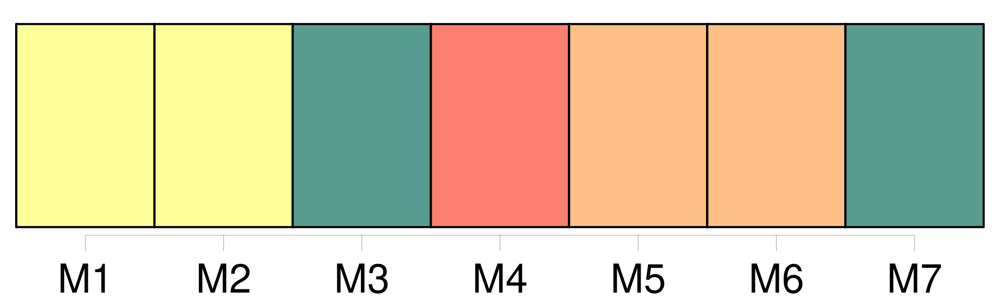
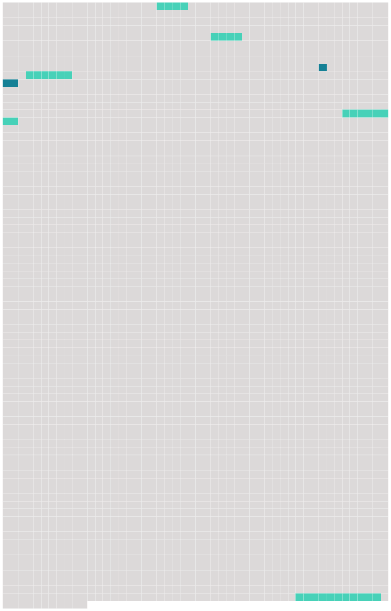

Longueur nb maillons : 8 mentions |
  |
Sans préjudice des dispositions de l'article 25 de la présente convention et sous réserve du paragraphe 2 ci-dessous, [les limites de responsabilité] prescrites aux articles 21, 22 et 23 sont révisées par le dépositaire tous les cinq ans, la première révision intervenant à la fin de la cinquième année suivant la date d'entrée en vigueur de la présente convention, ou si la convention n'entre pas en vigueur dans les cinq ans qui suivent la date à laquelle elle est pour la première fois ouverte à la signature, dans l'année de son entrée en vigueur, moyennant l'application d'un coefficient pour inflation correspondant au taux cumulatif de l'inflation depuis la révision précédente ou, dans le cas d'une première révision, depuis la date d'entrée en vigueur de la convention. [2 phrases] Si la révision mentionnée au paragraphe précédent conclut que le coefficient pour inflation a dépassé 10 %, le dépositaire notifie aux États parties une révision [des limites de responsabilité] [6 phrases]
Article 25
Article 26 [3 phrases]
Article 29 [94 phrases]
Le dépositaire notifiera rapidement à tous les signataires et à tous les États parties : |
 |
La ressource peut être téléchargée sur la page Ortolang
Si vous avez des questions ou vous voyez des erreurs, merci d'envoyer un mail à silvia.federzoni89@gmail.com
Site développé par S. Federzoni (contact)